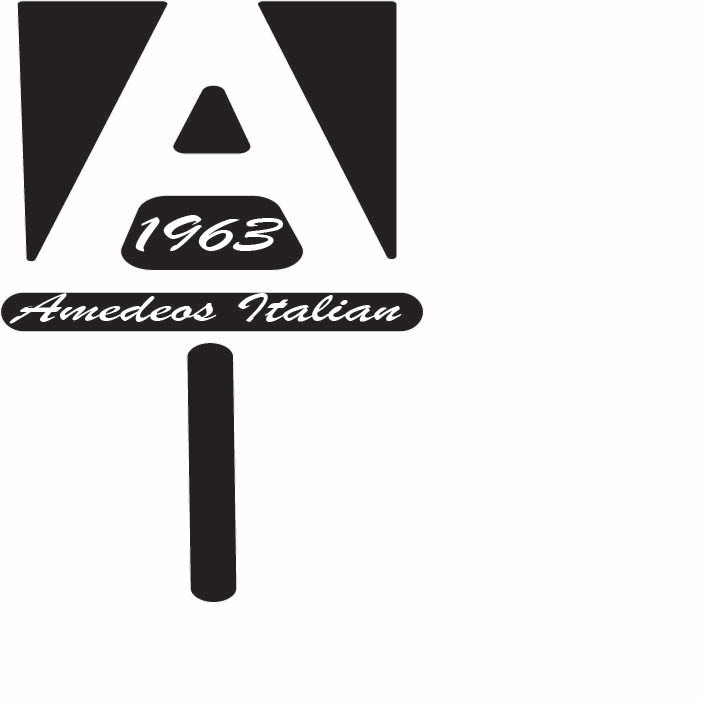

Jesse Cannon
Head of Graphic Design & Advertising for Cardiacs Sports & Memoribilia
I am an Eagle Scout and currently a student at Wake Tech Community College earning my Associate of Applied Science in Advertising and Graphic Design. Above all I am Christian and I put my faith above everything else. I currently work for my father's small business "CARDIACS Sports & Memorabilia". It is a sports card hobby shop where I am an associate and also head of graphic design, social media, and advertising. I love working for my father but I would like to start a career in the advertising and graphic design field soon. I love to design anything from banners and posters to car wraps and product packaging. I will graduate from Wake Tech with 5 certificates along with my AAS degree. When I am not working I am usually with my fiance managing my eBay account where I make extra money selling baseball cards. You can usually find me with a Mello Yello in my hand or at least near by. I like to try new things and meet new people who love design as much as I do.
Featured Projects
View selected projects below. More information can be found at behance.net/jessecannon.
Project Name
Summary or description of the project and/or your role in it. Add as many paragraphs as you need.
View project / case studyWork Experience
Optional paragraph for work experience summary. Not a part of the job details. Delete if not being used.
Job title
Company Name
Date at job
Job summary goes here. Add as many paragraphs as you need.
Optional list:
- Delete this list if you don't need it.
- Created...
- Lead...
- Responsible for...
Education
School name - City
Designation received or program name, year attended
Summary or accomplishments.